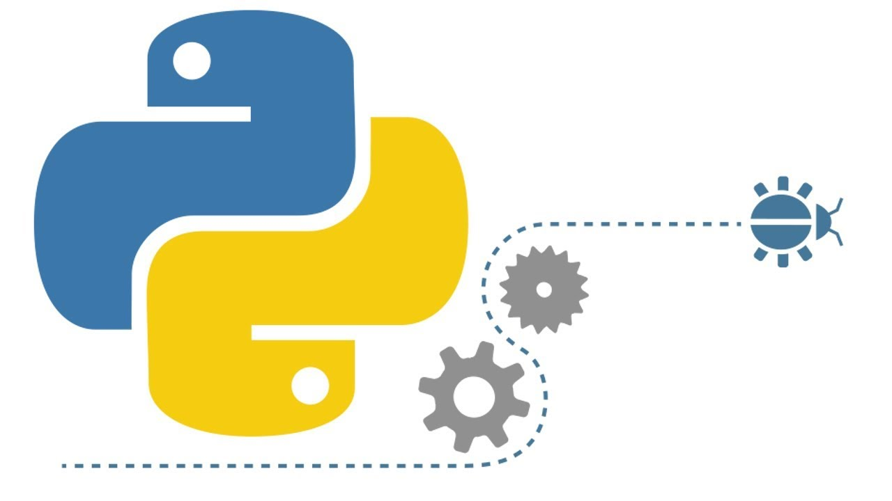
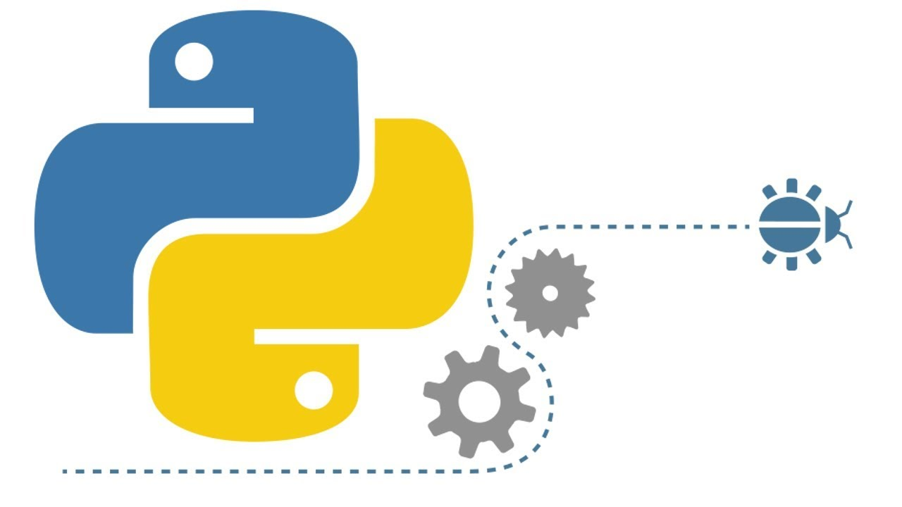

Методы списков
| Операция | Описание | Пример |
x in a |
Проверка, что x содержится в
а |
5 in [2, 3, 5] |
x not in a
|
Проверка, что x не
содержится в аТо же, что и not (x in a)
|
5 not in [2, 3, 6] |
a + a2 |
Конкатенация списков, то есть новый
список, в
котором сначала идут все элементы a,а затем все элементы a2 |
[2, 4] + [5, 3] == [2, 4, 5, 3] |
a * k |
Список a,
повторенный k раз |
[2, 3] * 3 == [2, 3, 2, 3, 2, 3]
|
a[n] |
n-й элемент
списка,отрицательные n — для отсчета с конца |
[2, 3, 7][0] == 2[2, 3, 7][-1] == 7 |
a[start:stop:step] |
Срез списка | [2, 3, 7][:2] == [2, 3] |
len(a) |
Длина списка | len([2, 3, 7]) == 3 |
max(a) |
Максимальный элемент списка | max([2, 3, 7]) == 7 |
min(a) |
Минимальный элемент списка | min([2, 3, 7]) == 2 |
sum(a) |
Сумма элементов списка | sum([2, 3, 7]) == 12 |
a.index(x) |
Индекс первого
вхождения x в a(вызовет ошибку, если x not in a, то есть
если х отсутствует
в а) |
[2, 3, 7].index(7) == 2 |
a.count(x) |
Количество
вхождений x в a |
[2, 7, 3, 7].count(7) == 2
|
a.append(x) |
Добавить x в конец a |
a = [2, 3, 7]a.append(8)a == [2, 3, 7, 8]
|
a.extend(a2) |
Добавить элементы коллекции a2 в конец a |
a = [2, 3, 7]a.extend([8, 4, 5])a == [2, 3, 7, 8, 4, 5]
|
del a[n]
|
Удалить n-й элемент списка |
a = [2, 3, 7]del a[1]a == [2, 7]
|
del a[start:stop:step] |
Удалить из a все
элементы,
попавшие в срез |
a = [2, 3, 7]del a[:2]a == [7]
|
a.clear() |
Удалить из a все
элементы
(то же, что del a[:]) |
a.clear() |
a.copy() |
Копия a (то же, что
и полный
срез a[:]) |
b = a.copy() |
a += a2a *= k |
Заменить содержимое списка на
a + a2и a * k соответственно |
|
a.insert(n, x) |
Вставить x в a на
позицию n, подвинув последующую часть дальше |
a = [2, 3, 7]a.insert(0, 8)a == [8, 2, 3, 7]
|
a.pop(n) |
Получить n-й элемент списка и
одновременно удалить его из списка. Вызов метода без аргументов равносилен удалению последнего элемента: a.pop() == a.pop(-1) |
a = [2, 3, 7]a.pop(1) == 3a == [2, 7]
|
a.remove(x) |
Удалить первое
вхождение x в a, в
случае x not in a — ошибка |
a = [2, 3, 7]a.remove(3)a == [2, 7]
|
a.reverse() |
Изменить порядок элементов
в a на обратный (перевернуть список) |
a = [2, 3, 7]a.reverse()a == [7, 3, 2]
|
a.sort() |
Отсортировать список по возрастанию |
a = [3, 2, 7]a.sort()a == [2, 3, 7]
|
a.sort(reverse=True)
|
Отсортировать список по убыванию |
a = [3, 2, 7]a.sort(reverse = True)a == [7, 3, 2]
|
bool(a) |
Один из способов проверить список на
пустоту
(возвращает True, если список
непустой,и False в противном случае) |
{kind=link}